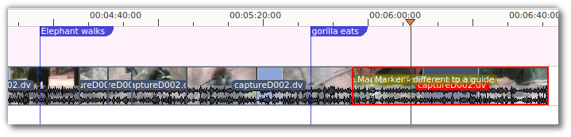
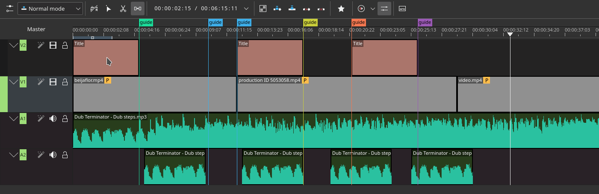

Guides¶
Contents
Guides are labels on the timeline that can be added by right-clicking at a spot on the timeline scale and choosing . You can put a comment in the guide and make the comment display by choosing editing in the menu or by clicking on the editing button.
Guides in the pic below are the purple flags. Not to be confused with Clips (gold in the picture below). Guides are static on the timeline and are stationary when clips are moved around. Markers are inside the clips and move with the clips.
Guides can be used to define regions for rendering. See Rendering Using Guides and Rendering Scripts.
Guides can also be used as chapters for DVD videos. See Rendering Using Guides and Rendering Scripts.
Move Guides with Spacer Tool¶
Since Version 21.08.0
Easily moves Guides along with clips using the Spacer Tool by using the new option.
